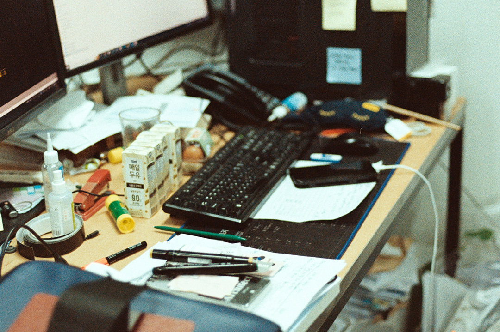
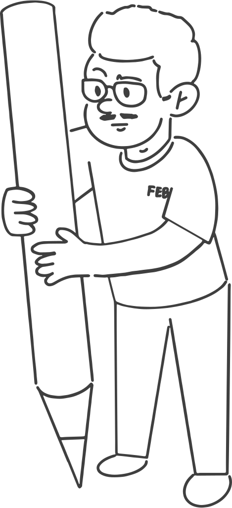
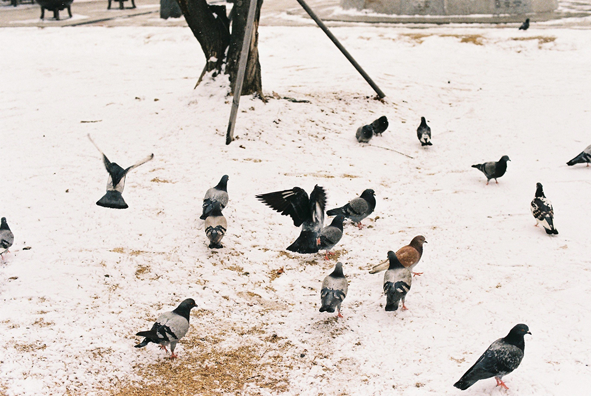

G-ARCH PROJECT


자기소개 먼저 해주세요.
저는 현수라고 하고요. 86년생입니다.
지아키에는 어떻게 들어오시게 되었나요?
그때 독서 모임을 하고 있었는데, 그 독서 모임에서 택님이 홍보한 거 보고 들어왔어요.
택님 통해서 들어오신 분이 아무래도 많으신 거 같아요. 그럼 이쪽 커뮤니티에 나오신 거는 언제쯤부터인가요?
저는 되게 늦게 나왔어요. 나이가 정확히 기억이 안 나는데 아무튼 졸업하고 나왔어요. 군대도 갔다오고, 재수도 하고, 복수전공한다고 한학기도 더 다녔고… 대충 알겠죠?
게이라는 걸 깨달은 것도 그때쯤인가요?
깨달은 거는 뭐 한 중고등학생 때였어요. 약간 좀 그게 컸거든요. 독실한 기독교…
부정하는 시기가 많았을 거 같아요.
그렇죠. 여자친구도 있었고요. 조금 황당할 수도 있겠는데, 결국에 기독교 때문인 것도 있어요. 이전에도 계속 관심이 가니까, 이런저런 사이트나, 카페도 들어가 보고 그랬지만, 누굴 만날 생각은 못 했어요. 신앙심이 있으니까. 그러다가 졸업하고 가기로 한 사무실이 있었는데, 사무실 사정으로 바로 입사를 못 하게 됐어요. 그러니까 와라 해놓고선 막상 빈자리가 없어서 몇 달 쉰 거에요. 지금 생각하면 다른 곳 갔으면 되는 거지만요. 그래서 하루하루 불안한 마음을 가지면서 집에서 아무것도 안 하고 누워있고 그러다 보니, ‘내 상황이 이렇게 불안한데, 내가 정체성까지 막 억눌리면서 살아야 하나’ 이런 생각으로 가게 된 거에요.
분출이 된거네요 억눌린게. 그런데 분출하고 싶었는데 좋은 핑계거리를 얻은 거 같기도 해요.
맞아요, 좋은 핑계였죠 사실.
취업도 못 하고, 동성애도 못 하고, 내가 왜 이렇게 살아야 하나. 이런 상황인거네요.
아무튼, 그렇게 처음 나왔는데, 초반에 정말 이상한 사람 많이 봤어요. 누구나 처음엔 좀 그렇긴 하잖아요. 워낙 뭘 모르다 보니, 그중에 한 명에게 회사도 알려주는 일도 있었어요. 그랬다가 부담스러워서 그만 만나겠다 했더니, 무슨 아웃팅을 하겠다 그러는 거에요. 그러면서 제 사진을 다른 게이들에게 보여줬더니 그놈들이 제가 여기저기 집단으로 하고 다니는 걸레로 유명하다, 이런 말을 했다는 거에요. 근데 내가 진짜 그랬으면 억울하지라도 않지. 이제 막 나온 상태였는데…
그렇죠, 아 이제 걸렸구나, 이럴 텐데.
아무튼 그런 놈도 만나고 초반에 되게 이상한 놈들 많이 만나고 그랬는데, 모임도 나가고 친구도 생기니까 훨씬 안정적으로 상황이 바뀐 거 같아요.
어떤 모임을 했었어요?
제가 졸업하고 이쪽 생활을 하다 보니까 학교에 다닐 때 동아리를 하진 못했어요. 그런데 커뮤니티를 통해서 같은 학교를 나온 이쪽 사람들을 알게 됐었어요. 그리고 아까 말했던 독서 모임이 있었는데, 코로나 기점으로 많이 수그러들어서.. 지금은 없고요.
그렇군요. 그러고 보면 지아키는 코비드 상황 때 모임을 잘 못하긴 했지만, 그래도 전체 회원 수가 줄어들거나 그렇진 않았던 거 같아요. 같은 직군의 친목 모임이다 보니까 그런 거 같기도 하고요. 친목 모임을 하니까, 좋은 게 분열이 생기는 일이 거의 없으니까. 친목 모임하는데 무슨 반대를 하겠어요.
그렇죠, 지아키가 좀 신기한 거 같아요. 일단 인원이 많고, 어느 정도 목적성이 있다는 생각이들어요. 모여서 뭘 하자라기보단, 서로 직업적인 니즈가 잘 맞아서…
맞아요, 특히 현수님께서 카톡방에 이런저런 건축 정보들을 자주 공유하시잖아요? 이런 정보들은 어디서 얻어요? 솔직히 되게 신기해요.
웹서핑과 SNS와 기타 등등… 그리고 따로 주변에서 정보 들어오는 것들도 있고요.
따로 들어온다는 정보가 있다니까 뭔가 멋있기도 하고 그러네요. 그런데 저희 카톡방에서 무반응일 때도 많잖아요? 그럴 때 좀 어떠세요? 좀 아쉽거나 그러진 않나요?
사실 아무 생각이 없는 게 한편으로 제가 저장해 놓는 의미도 있어서.
아…! 본인 기록용으로 쓰시는구나. 퍼즐 하나를 찾은 기분이에요.
건축방에서 링크 따로 볼 수 있으니까. 그리고 반응 있으면 같이 얘기하면 좋고, 아니면 어쩔 수 없고. 그냥 그런 정도에요. 불편하면 안 할 거에요.
불편하진 않을 것 같아요. 불편한 것도 좀 웃기다는 생각도 들고.
그리고 건축 말고 가끔 성소수자 인권 얘기도 올리고 그렇죠. 뭔가 그냥 그 생각은 많이 해요. 서로 정보 공유는 많이 할 수 있으면 좋겠다. 어찌 됐든 우리 모임에서 건축이나 도시 이런 것도 그냥 하나의 고리라고 생각해서 얘기할 수 있으면 좋고 안 하면 어쩔 수 없고 그냥 그 정도입니다.
현수님 보면 건축 모임에 너무 잘 맞는 사람 같다는 생각이 들어요. 심지어 모임 톡방 소개에도 ‘건축가’라고 쓰고 계시잖아요? 이런 게 뽐인가? 하는 생각을 했어요. 그러다 보니 연차도 궁금해지는데요, 얼마나 되셨어요?
지금 회사 전에 아틀리에에서 5년 반 있었고, 지금 회사에 거의 3년 넘게 다니고 있네요. 중간에는 건축사 시험 준비하면서 프리랜서로도 있었고요.
그러면 거의 한 8년 9년 됐네요. 좀 더 연차가 높지 않을까 생각했던 거 같아요.
졸업을 늦게 하기도 했고, 재수도 했고, 중간에 1년 정도 쉬기도 했고요.
그게 현수님 나이에 비해서 적다기보단, 풍기는 느낌이 있잖아요.
근데 전 초년 차 때부터 (외모가) 현장감 있는 약간 실장님 모습으로 보였어요.
뭔지 알 거 같아요.
사무실이 달라진 것도 있지만, 전 사무실에선 어쨌든 직원으로 있었고, 지금은 소장으로 있잖아요. 무엇이 다른가요?
사실 반소장이랑 비슷한 것도 맞긴 하는데, 일단 저도 수주 압박이 있어요. 저희는 실적 따져서 인센티브를 나누거든요. 그러니까 압박이 있네요. 제 작업을 하고 싶은 욕구가 크기도 하고요. 기존 소장님들이 다음 세대 키우는 차원에서 데려온 것도 있어서 약간 뭐 너무 급할 것 없다 뭐 이런 식으로 얘기하시긴 하는데 그래도 압박은 되죠. 저랑 비슷한 나이대에 있는, 원래 잘 모르던 분도 비슷한 시기에 소장으로 왔기도 했고요.
수주 압박이 있고, 하는 일 자체는 크게 달라지진 않았나요?
직접 프로덕션에서 손을 점점 떼고 주로 봐주는 역할을 하려고 하는데, 직원이 많지 않다 보니까 쉽지는 않아요.
전 회사에서도 실장급으로 일을 했던 거니까 거기에 수주압박까지 생겨버린 거네요? 책임도 더 생기겠고요.
그런데 전에 회사에서는 왜 그랬는지 잘 모르겠는데, 주말 출근도 많이 하고 야근도 많이 했는데, 지금은 주말 출근은 현상 마감 때 아니면 안하고 전보다 덜 하게 되긴 했어요.
다행이네요.
지금보다 일이 적었던 거 같은데, 그냥 계속 나왔던 거 같아요. 지금은 그렇지는 않죠. 그리고 지금 사무실은 솔직히 민간 일이 별로 없어요.
안 받으시는 건 아니잖아요. 그런데 공공을 많이 하는 이미지긴 해요.
지금 소장님이 그 얘기를 하시는 게, 초반에는 공공을 하고 싶어서 한 게 컸는데 약간 지금 보니 그게 좀 아쉽다고도 하시더라고요.
그런데 저는 공공 많이 하는 회사가 제가 지향하는 회사의 모습이긴 해요. 그러니까 이미 땅도 너무 많이 건물이 지어졌는데 굳이 민간이 계속 건물을 지어야 하나 그런 생각은 있었어요. 그래서 지금 사무실을 다니는 그런 이유도 있지 않을까 생각했어요.
제가 하던 거랑 좀 되게 다른 사무실이긴 해요. 그전에는 되게 물성이나 뭔가 섬세한 공간감이나 이런데 관심이 많았는데 관심이 많았는데, 지금 소장님은 다이어그램으로 많이 디자인하시고, 프로그램 얘기를 많이 하시죠. 엄청 많이 배웠어요.
하는 내용은 비슷한데, 하는 건축의 형태는 되게 달라졌네요.
그러니까 약간 그 지점에서 마찰도 많고 제가 하던 거랑 너무 달라요. 그렇죠, 그러니까 예를 들면 이전 회사의 설계는 어떻게 보면, 사무실에서의 계획이 배치랑 평면으로 거의 끝났었어요. 물성이나 이런 것들은 도면으로 만든다기보다 진짜 현장에서 만드는 스타일이었어요.
훨씬 감각적인 거라는 생각이 들어요.
지금 사무실에서는 같은 ‘물성’을 얘기해도 그 물성이 아니에요. 지금은 생산 측면 아니면 관리 측면에서 말하는 물성이 크죠. 아니면 특이한 공간이나 특이한 효과를 내는? 그런 의미가 큽니다. 그리고 도시 프로젝트도 하고 있어요. 저희 사무실에서 진행했던 도시 프로젝트들은 지구단위계획처럼 법정계획은 아니에요. 그런데 건축기본법에 의해서 하는 거거든요? 국토부에서 사업을 따와서 수립하는데, 이게 법정 계획이 아니니까 꼭 지킬 필요는 없는 거에요. 되게 흥미롭죠.
발주처가 어디인거에요?
각 지자체죠. 이게 컨설팅의 측면이 크고, 어떻게 보면 딱딱한 도시계획이라기보다 각 지자체에 맞는 비전을 만들어주는 프로젝트에요. 그러니까 어떻게 보면 되게 실체가 없다고 느낄 수도 있고, 그런데 잘 쓰면 또 지자체의 브랜딩이나 실제 문제해결의 차원으로 되기도 하는 거고요. 전 회사에서 제가 다니는 동안에는 이런 일을 못 했는데, 지금 하니까 되게 재밌게 하고 있습니다.
그럼, 또 다른 경력인 ‘교수’ 현수님에 대해서도 궁금해요. 대학교 설계 강의를 나가셨었죠? 어떻게 하게 되신 거예요?
원래 하고 싶은 생각이 있었긴 했어요. 두 가지 이유가 있어요. 첫 번째는 외부의 다른 사람들을 만나고 싶다 하는 생각이 있었어요. 다른 강사들은 뭐 하고 사는지 궁금하니까, 그리고 두 번째는 경제적인 이유도 컸어요. 그래서 하게 됐는데, 제가 좀 간과한 부분이 있죠. 강의가 생각보다 기가 엄청 빨리는거에요. 이동시간은 말할 것도 없고, 설계 수업도 나름 준비를 해야 하고요.
그래도 이론강의에 비해서는 덜하긴 할 텐데.
심지어 강사들에게 돌아가며 일부 이론 특강을 시켜요. 진짜 이론 특강. 그러니까 저 같은 경우는 뭘 했냐면 ‘건축과 빛’에 대해서 특강을 했어요.
너무 힘들 것 같은데요. 저는 못 할 것 같아요.
다른 선생님은 ‘도면 그리는 법’ 이런 거 하고, 어떤 선생님은 ‘공간과 인간 행동’ 이런식으로 하는데, 사실 건축학인증 SPC 때문에 하는 거에요. 그래서 저는 ‘환경’ 파트를 만족시키는 강의를 했죠.
현수님이 학교 다닐 때랑 지금 강의할 때랑 거의 10년 정도 차이가 있잖아요. 무엇이 좀 다른가요?
뭔가 약간 꼰대 같은 말이 나올 거 같은데… 일단 되게 재밌게 생각한 거는 전반적으로 약간 프레젠테이션 스킬이 엄청 올라가 있다는 느낌?. 그러니까 학생들이 모형이든 다이어그램이든 도면이든 스케치든 엄청 좋은 퀄리티로 잘 보여줘요. 그런데 아쉬운 건 전반적으로 애들에게 마무리하기 전에 좀 더 보완할 부분들을 말해주고, 설계 방향도 조정할 수 있는 끝까지 몰아붙여서 해서 마감하자 했는데, 그런 게 잘 반영이 안 되고, 적당히 끊고 프리젠테이션을 준비하는 걸 많이 봤어요.
뭔가 브랜딩은 확실하게 되어있는 것처럼 보이는데 내실은 사실 조금 덜 다져진 그런 느낌이네요.
근데 그것도 사실 장점이잖아요. 건축은 어찌 됐든 보여주는 게 중요하고, 주어진 시간 내에 마감하는 게 중요하죠. 그것도 중요하긴 한데 한편으로 이게 학교다 보니까 어딘가 아쉬워요. 지난 학기에 그런 의미에서 되게 약간 도면이나 이런 거는 엄청 퀄리티 있게 했는데 그런 게 발전 안 된 친구의 성적을 B를 줬어요. 그 친구가 아마 강의 평가를 안 좋게 준 친구가 아닌가 생각도 하고… 막상 성적 항의를 하는 친구가 있었으면, 제가 재고를 하거나 아니면 좀 더 설명해줄 수 있었는데 막상 컴플레인은 없었고… 그런 건 좀 아쉽기도 해요.
그럼 주로 몇 학년을 하신 거에요?
1학년을 했어요.
저도 다니던 회사 소장님이 강의를 나가셨는데, 1학년이 젤 힘들다고 하더라고요. 어떠셨어요?
1학기 같은 경우에는 어? 이런 거까지 알려줘야 하나 하는 게 있었어요. 예를 들면, 핀업하는 방법…이라던가, 모형재료를 사는 법 이런 것들요. 그런데 그런 거는 차라리 알려주면 된다고 생각해서 괜찮은데. 설계하는 법, 그러니까 어떻게 됐던 생각을 해서 만드는 법, 아니면 만든 걸 놓고선 생각하는 법 이런 것을 알려주기가 쉽지 않네요. 어쨌든 뭔가를 만들고 또 자꾸 고쳐나가고 해야 하잖아요. 그런데 이걸 가르쳐주는 게 되게 힘들죠. 대부분이 처음에는 뭔가 딱 하면 한 번에 딱 나올 거라고 생각을 해요.
전 아직도 그런 거 같아요. 그랬으면 좋겠어요.
그렇긴 하죠, 하지만 쉽진 않잖아요.
지아키에 있는 학생분들이건, 다른 건축하는 후배들에게 ‘교수’로서 하고 싶은 얘기가 있으신가요?
가장 중요한 게, 일단 그냥 자기 꼴리는 대로 하는 게 좋다고 생각해요. 점점 더 개성이 중요한 시대인 것은 맞습니다. 그리고 한편으로 자기 생각을 정말 끝까지 밀어붙이는 연습을 꼭 해보면 좋겠네요.
회사도 다니면서, 심지어 소장으로. 그러면서 강의도 나가시면 굉장히 바쁠 거 같은데요. 그래서 연애할 때 회사 때문에 뭔가 힘든 일도 있었을 거 같아요.
스물 여덟 살에 늦게 나와서 처음 만났던 친구가 되게 잘 맞았거든요. 한 6개월 만났어요. 그런데 이 친구는 나중에 생각해보니, 제가 연애보다 일 쪽으로 훨씬 치중하면서 그 친구에게 소홀해지니까 마음을 어느 정도는 이미 정리하고 있었던 것 같아요. 제가 피겨 되게 좋아하잖아요. 김연아 아이스쇼를 같이 보고 나왔다가 잠실역에서 차였어요. 근데 그런 생각은 들어요. 얘랑 잘 됐으면 진짜 오래 만났을 수도 있었을 것 같다는 생각.
그런 생각나는 사람들이 한 번씩 있는 것 같아요.
그 친구가 우리 사무실로 오기도 하고 막 이랬어요. 요즘 이런 생각이 드는 거죠. 얘가 진짜 노력한 거였구나. 근데 그 뒤로 만난 사람들은 쉽지 않아요. 그냥 어떻게 보면 되게 뻔하고 아니면 나이 차 많이 나는 애들은 약간 오히려 저한테 약간 기대는 게 아니라, 묘하게 요구하는 것들이 있더라고요.
나이 차가 많이 난다고 다 그런 건 아니지만 한 번씩 그런 경우도 있는 거 같아요. 나이가 30대 중반이 넘으면서 약간 선이라거나 결혼에 대한 압박도 클 것 같아요.
저희 어머니랑 가끔 얘기는 하네요. 어머니랑 저는 가정사 때문에 오랜 기간 서로 스트레스가 쌓이면서 예민한 상황이 꽤 오래된 사이라서 서로 엄청 조심하는 편이거든요. 그래서 막 압박은 안 하시는데 어쩌다 가뭄에 콩 나듯이 한 번씩 말씀하세요. 그러다가 보니 한 번씩 어쩔 수 없이 선을 본 적도 있었네요. 근데 좀 웃긴 건데 저한테는 그런 사람들이 많았어요. 약간 데릴사위를 원하는…
그럼 되게 부잣집인 거 아니에요?
예를 들면 아버님이 엄청난 부동산 부자였어요. 근데 이분은 사업적으로 건축사가 필요하시다더라구요, 그거 뭔지 알겠죠... 유학도 보내주겠다 그러고...
전 그러면 흔들릴 거 같아요. 유학도 갈 수 있고. 제가 너무 속물인 거 같긴 한데…
정리해보면, 저는 압박이 없던 거는 아닌데 제가 막 기분이 나쁠 정도로 그렇게 들어온 적은 없었어요. 친척들도 사이가 안 좋아서 잘 안 보고요. 최근 3년간 못 만났다는 게 막상 만나고 싶은데 진짜 심적 여유가 없어서 못 만난 사람이 진짜 많아요. 요즘 좀 약간 진짜 주말에 친구들도 만나기 시작했고 어떻게 보면 지아키 모임 못 나간 것도 진짜 심적 여유가 없어서 그랬네요. 그리고 사람을 만나도 막상 방전돼있어서 대화가 잘 안되더라고요. 그래서 어쨌든 생활을 결국 유지해야 되는데, 어떻게 할 수 있을까 고민이 많아요. 근데 이게 만약 내가 1인 소장을 했으면 어땠을까 이 생각도 들고. 더 힘들었을까, 아니면 좀 나았을까 생각이 많이 듭니다. 다시 또 일 얘기로 가는 거 같네요.
1인 소장을 한다는 건, 자기가 온전히 시간 관리를 해야 하고, 또 할 수 있고, 그러니까 모든 걸 내가 선택해야만 하지만 또 선택할 수 있는 거잖아요. 저는 그런 것 때문에 1인 소장을 하고 싶어요. 내가 나 하나만 책임지면 되는 거니까.
네, 또 일 얘기로 흘러갔네요. 그럼 어쨌든, 3년전에는 연애를 했었고, 지금은요?
근데 저는 사실 되게 길게 만난 적이 별로 없었어요. 제가 성격이 원래 그래서 그렇게 된 건지 아니면 자꾸 그러다 보니까 성격이 이렇게 된 건지 모겠어요. 일과 개인을 놓으면 항상 일 쪽이기도 하고요. 뒤늦게 생각해보면 걔 되게 괜찮았는데….
왜 그런 것 같아요?
제가 성공에 대한 생각이 되게 크기도 하고요. 그냥 스스로 그걸 합리화시키는 건지 몰라도, 가족 생각하면 내가 뭔가 해내야 한다. 이 생각이 진짜 크거든요. 이게 또 어떻게 보면 제가 1인으로 따로 못 차린 이유 중 하나가 그런 거에요. 어찌 됐든 어머니 부양을 하는 것도 있고…. 저는 약간 불안정성에 대한 불안감이 엄청 커요. 당장 경제적인 부분이 끊기게 되면 어떡하지 하는 생각이 큽니다.
그런 불안감이 지금 생활에서 크게 작동하는 부분이 있나요?
아무래도, 제가 지금 사무실에 있으면 장단점들이 있어요. 장점은 일단 여럿이 하다 보니 상대적으로 안정적이어서 월급은 계속 나오는 게 있고, 어찌 됐건 다른 경력 높은 소장님들과 일하다 보니 지금 연차의 제가 쌓기 쉽지 않은 실적을 제 실적으로 놓고 있기도 하거든요. 하지만 동시에 제가 하고 싶은 거를 100%는 못 하는 상황이기도 하고요. 예를 들면 사무실 다 같이 해야 되는 큰 일이랑 제가 하고 싶은 작은 일이 있으면, 작은 거를 안 할 수밖에 없는 게 맞는 거니까요. 그리고 또 한편으론 내가 한 프로젝트고, 회사 내에 다른 소장님들도 인정하는데, 외부에서는 그렇게 잘 안 보는 것도 있고요. 이건 제가 장기적으로 진짜 노력해야 할 부분이기도 하고요. 이게 또 제 내적으로도 되게 충돌되는 부분이 많아요. 하고 싶은 거랑 해야 될 거를 잘 구분을 못해서 서로 충돌해요. 이게 제 사주에도 그렇게 나오더라고요. 건축일 쪽으로 말을 하면, 대형설계회사에 다니면서 프리츠커 받는 걸 꿈꾸는 사람. 그러니까 발은 지극히 현실적인 거기에다 두고서.
머릿속으로 되게 이상적인
이게 너무 양극단이 크다고 약간 제 사주 보면 그 얘기 항상 나오거든요.
지금 상황에서 그렇긴 한데, 그걸 잘 이용할 수도 있는 거잖아요. 그걸 잘 딜링하면서 양쪽을 다 적당히 조절할 수 있는 거니까요.
근데 제가 그냥 너무 현실 쪽에만 최근 몇 년은 있었구나, 그 생각이 많이 들긴 해요. 좀 장기적으로 봤을 때는 그러니까 결국 뭔가 저만의 고유한 것을 내세울 수 있는 게 있어야 되는데 그 부분을 진짜 고민을 많이 해보고 있어요.
아까 학생들한테 하는 얘기가 아니라 스스로에게 하는 얘기였던 거 같기도 하네요. 슬슬 마무리를해보려고해요. 현수님은 지아키를 통해서 무언가 얻거나 고마웠던 게 있나요?
제가 나갔던 모임이 이렇게 길게 간 건 사실 유일하고, 지금까지 있는 것도 유일하기도 하고 한편으로 좋은 게 (표현하기 힘든데) 전반적으로 괜찮고 좋은 것 같습니다.
약간 사람들이 순하죠. 기가 엄청 센 사람도 없고.
그러니까 다른 모임 가면 뚱뚱한 사람 일단 싫어하는 사람도 있고, 이유 없이 적의를 보이는 사람들도 있었는데, 지아키에서는 대놓고 막 이러는 사람들은 없어서 좋은 것 같아요. 그리고 저는 어쨌든 공통의 무언가를 나눌 수 있는 사람들이, 이게 꼭 설계 아니더라도 비슷한 것들을 같이 이야기하고, 서로 공유할 수 있는 부분이 확실히 있어서 좋습니다. 학과 동기 모임 같은 거 외에 업무 같은 거 서로 물어볼 수 있는 사람들이 있는 것도 좋은 거 같아요.
맞아요.
어쨌든 서로 정보 공유도 하고
‘지아키 찬스’라고 말하면서 몇몇 분들이 이런저런 질문을 하시는데, 엄청 속 시원하게 대답 안 날 때도 있지만 그래도 많은 도움이 되기도 하죠.
예를 들면 예전에 제가 이직할 때 지아키 멤버 중에 한 분이 엄청 도움을 주셨어요. 본인 포트폴리오 보여주시고 중요한 포인트들도 많이 알려주셨습니다. 그런데 막상 그 회사로 가지는 않았네요.
저도 진로 고민할 때 정말 좋은 조언들 많이 들었던 게 기억이 나네요. 자 그럼, 마지막 질문입니다. 노년의 이쪽으로서의 삶, 혹은 건축적인 삶에 대한 상상을 하시나요?
사실 요즘 엄청 고민하는 부분이 그거였어요. 이런 고민의 계기 중 하나가 건강 이슈랑 되게 관련이 있거든요. 제가 원래부터 운동과 거리가 먼데도 이전부터 이 일 오래오래 하려면 건강해야 된다는 생각은 있었는습니다. 그래도 이전에는 딱히 그렇게 아프진 않았으니까 괜찮았는데, 이제 막 나이도 나이고 하다 보니 이러다가는 곧 문제가 올 것 같아서 건강은 진짜 챙겨야겠다는 생각이 들었어요. 그리고 제가 아까 되게 현실적인 거랑 이상적인 거랑 되게 크다고 했잖아요. 그래서 노후를 위해 노후 자금 이런 생각을 많이 하거든요. 그런데 또 한편으로 경제적인 생각만 하다 보니까, 요즘 또 내가 하고 싶었던 진짜 재밌는 작업들도 싶은데 하는 생각들도 많이 들고요. 최소한 올해 정도는 그런 거를 약간 재정비하는 식으로 생각하고 있어요. 내 건축의 방향도 좀 잡아보고 건강도 챙기고. 그리고 그 고민 많이 해요. 지속 가능하게 일하는 방법 고민 많거든요. 그게 그냥 나 혼자가 아니라 직원들, 또 건축계 전반을 다 포함해서 생각하는 겁니다. 그런데 최근엔 직원들을 지속가능하게 해주기 위해서 저를 갈아 넣는 것도 있었어요. 직원들 야근시키느니 내가 해버리자 이런 생각도 많았고요. 그래서 요즘은 그 중도 지점을 찾기 위해 고민을 많이 하고 있어요.
인터뷰 진행 및 사진 : 정민 일러스트 : O